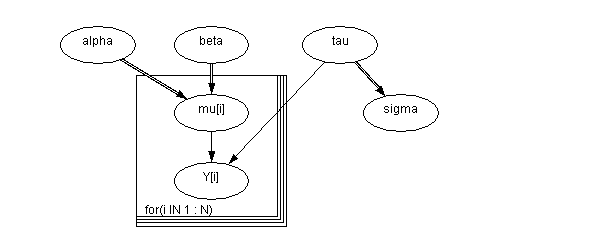
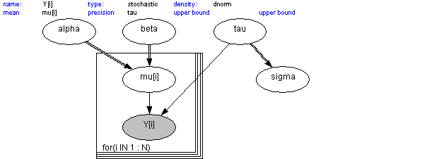
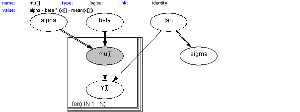
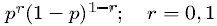
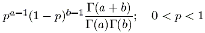
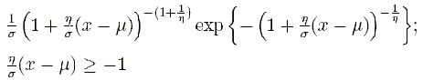
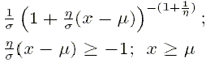
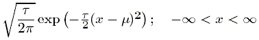
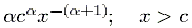
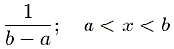

![[modelspecification0]](modelspecification0.bmp) The BUGS Model Specification
The BUGS Model Specification
Language
Contents
Graphical models
Graphs as a formal language
Stochastic nodes
Logical nodes
Arrays and indexing
Repeated structures
Data transformations
Nested indexing and mixtures
Formatting of data
Appendix I Distributions
Appendix II Functions and Functionals
Graphical models
[top]
We strongly recommend that the first step in any analysis should be the construction of a
directed graphical model
. Briefly, this represents all quantities as nodes in a directed graph, in which arrows run to nodes from their direct influences (parents). The model represents the assumption that, given its parent nodes pa[
v
], each node
v
is independent of all other nodes in the graph except descendants of
v
, where descendant has the obvious definition.
Nodes in the graph are of three types.
1.
Constants
are fixed by the design of the study: they are always founder nodes (
i.e.
do not have parents), and are denoted as rectangles in the graph.
2.
Stochastic node
s are variables that are given a distribution, and are denoted as ellipses in the graph; they may be parents or children (or both). Stochastic nodes may be observed in which case they are
data
, or may be unobserved and hence be
parameters
, which may be unknown quantities underlying a model, observations on an individual case that are unobserved say due to censoring, or simply missing data.
3.
Deterministic nodes
are logical functions of other nodes.
Quantities are specified to be data by giving them values in a data declaration, in which values for constants are also given.
Directed links may be of two types: a thin solid arrow indicates a stochastic dependence while a thick hollow arrow indicates a logical function. An undirected dashed link may also be drawn to represent an upper or lower bound for a stochastic node.
Repeated parts of the graph can be represented using a 'plate', as shown below for the range
(i in 1:N)
.

A simple graphical model, where Y[i] depends on mu[i] and tau, with mu[i]
being a logical function of alpha and beta.
The conditional independence assumptions represented by the graph mean that the full joint distribution of all quantities
V
has a simple factorisation in terms of the conditional distribution p(
v
| parents[
v
]) of each node given its parents, so that
p(
V
) =
P
p(
v
| parents[
v
])
v
in
V
The crucial idea is that we need only provide the parent-child distributions in order to fully specify the model, and
OpenBUGS
then sorts out the necessary sampling methods directly from the expressed graphical structure.
Graphs as a formal language
[top]
A special drawing tool
DoodleBUGS
has been developed for specifying graphical models, which uses a hyper-diagram approach to add extra information to the graph to give a complete model specification. Each stochastic and logical node in the graph must be given a name using the conventions explained in
Creating a node
.
.
The shaded node Y[i] is normally distributed with mean mu[i] and
precision tau.

The shaded node mu[i] is a logical function of alpha, beta, and the
constants x. (x is not required to be shown in the graph).
The value function of a logical node contains all the necessary information to define the logical node.
As an alternative to the Doodle representation, the model can be specified using the text-based
BUGS
language, headed by the model statement:
model {
text-based description of graph in BUGS language
}
The BUGS language: stochastic nodes
[top]
In the text-based model description, stochastic nodes are represented by the node name followed by a tilda symbol followed by the distribution name followed by a comma-separated list of parents enclosed in brackets
e.g.
x ~ dnorm(mu, tau)
The distributions that can be used in
OpenBUGS
are described in
Appendix I Distributions
. The parameters of a distribution must be explicit nodes in the graph (scalar parameters can also be numerical constants) and so may not be expressions.
Multivariate nodes must form contiguous elements in an array. Since the final element in an array changes fastest, such nodes must be defined as the final part of any array. For example, to define a set containing I multivariate normal variables of dimensional K as a single multidimensional array x[i, j], we could write:
for (i in 1 : I) {
x[i, 1 : K] ~ dmnorm(mu[], tau[ , ])
}
Data defined by a multivariate distribution must not contain missing (unobserved) values. The only exception to this rule is the multivariate normal distribution. We realise this is an unfortunate restriction and we hope to relax it in the future. For multinomial data, it may be possible to get round this problem by re-expressing the multivariate likelihood as a sequence of conditional univariate binomial distributions or as Poisson distributions.
Censoring is denoted using the notation C(lower, upper)
e.g.
x ~ dnorm(mu, tau)C(lower, upper)
would denote a quantity x from the normal distribution with parameters mu, tau, which had been observed to lie between lower and upper. Leaving either lower or upper blank corresponds to no limit, e.g. C(lower,) corresponds to an observation known to lie above lower. Whenever censoring is specified the censored node contributes a term to the full conditional distribution of its parents. This structure is only of use if x has not been observed (if x is observed then the constraints will be ignored).
In general multivariate nodes can not be censored, the multivariate normal distribution is exempted from this restriction.
Truncation is denoted by using the notation T(lower, upper)
eg
.
x ~ dnorm(mu, tau)T(lower, upper)
would denote a quantity x from the modified normal distribution normalized by dividing by the integral of the distribution between limits lower and upper, which lies between lower and upper. Leaving either lower or upper blank corresponds to no limit, e.g. T(lower,) corresponds to an observation known to lie above lower. x can either be observed or unobseved.
It is also important to note that if x, mu, tau , lower and upper are all unobserved, then lower and upper must not be functions of mu and tau.
Nodes with a discrete distribution must in general have integer values. Observed variables having a binomial or Posson distribution are exempt from this restriction.
Certain parameters of distributions must be constants, that is they can not be learnt. These include both parameters of the Wishart distributions, the order (N) of the multinomial distribution and the threshold (mu) of the generalized Pareto distribution.
The precision matrices for multivariate normals must be positive definite. If a Wishart prior is not used for the precision matrix, then the elements of the precision matrix are updated univariately without any check of positive-definiteness. This will result in a crash
unless the precision matrix is parameterised appropriately.
This is the user's responsibility!
Forming the precision matrix from the product of cholesky factors will ensure positive definiteness.
The BUGS language: logical nodes
[top]
Logical nodes are represented by the node name followed by a left pointing arrow followed by a logical expression of its parent nodes e.g.
mu[i] <- beta0 + beta1 * z1[i] + beta2 * z2[i] + b[i]
Logical expressions can be built using the following operators: plus (A + B), multiplication (A * B), minus (A - B), division (A / B) and unitary minus (-A). The scalar valued functions in
Appendix II Functions and Functionals
can also be used in logical expressions. A vector values logical function can only be used as the sole term on the right hand side of a vector valued logical relation.
A link function can also be specified acting on the left hand side of a logical node
e.g.
logit(mu[i]) <- beta0 + beta1 * z1[i] + beta2 * z2[i] + b[i]
The following functions can be used on the left hand side of logical nodes as link functions: log, logit, cloglog, and probit (where probit(x) <- y is equivalent to x <- phi(y)).
A special logical node called "deviance" is created automatically by
OpenBUGS
: this calculates -2 * log(likelihood), where 'likelihood' is the conditional probability of all data nodes given their stochastic parent nodes. This node can be monitored, and is used in the DIC tool - see
DIC...
Arrays and indexing
[top]
Arrays are indexed by terms within square brackets. The four basic operators +, -, *, and / along with appropriate bracketing are allowed to calculate an integer function as an index, for example:
Y[(i + j) * k, l]
On the left-hand-side of a relation, an expression that always evaluates to a fixed value is allowed for an index, whether it is a constant or a function of data. On the right-hand-side the index can be a fixed value or a named node, which allows a straightforward formulation for mixture models in which the appropriate element of an array is 'picked' according to a random quantity (see
Nested indexing and mixtures
). However, functions of unobserved nodes are not permitted to appear directly as an index term (intermediate deterministic nodes may be introduced if such functions are required).
The conventions broadly follow those of S-Plus:
n : m represents
n
,
n
+ 1, ...,
m
.
x[ ] represents all values of a vector
x
.
y[, 3] indicates all values of the third column of a two-dimensional array
y
.
Multidimensional arrays are handled as one-dimensional arrays with a constructed index. Thus functions defined on arrays must be over equally spaced nodes within an array: for example sum(y[i, 1:4, k]).
When dealing with unbalanced or hierarchical data a number of different approaches are possible - see
Handling unbalanced datasets.
The ideas discussed in
Nested indexing and mixtures
may also be helpful in this respect.
Repeated structures
[top]
Repeated structures are specified using a "for - loop". The syntax for this is:
for (i in a : b) {
list of statements to be repeated for increasing values of loop-variable
i
}
Note that neither a nor b may be stochastic - see
here
for a possible way to get round this.
Data transformations
[top]
Although transformations of data can always be carried out before using
OpenBUGS
, it is convenient to be able to try various transformations of dependent variables within a model description. For example, we may wish to try both
y
and
sqrt(y)
as dependent variables without creating a separate variable
z = sqrt(y)
in the data file.
The BUGS language therefore permits the following type of structure to occur:
for (i in 1:N) {
z[i] <- sqrt(y[i])
z[i] ~ dnorm(mu, tau)
}
Strictly speaking, this goes against the declarative structure of the model specification, with the accompanying exhortation to construct a directed graph and then to make sure that each node appears once and only once on the left-hand side of a statement. However, a check has been built in so that, when finding a logical node which also features as a stochastic node (such as z above), a stochastic node is created with the calculated values as fixed data.
We emphasise that this construction is only possible when transforming observed data (not a function of data and parameters) with no missing values.
This construction is particularly useful in Cox modelling and other circumstances where fairly complex functions of data need to be used. It is preferable for clarity to place the transformation statements in a section at the beginning of the model specification, so that the essential model description can be examined separately. See the
Leuk
and
Endo
examples.
Nested indexing and mixtures
[top]
Nested indexing can be very effective. For example, suppose
N
individuals can each be in one of
I
groups, and
g[1:N]
is a vector which contains the group membership. Then "group" coefficients
beta[i]
can be fitted using
beta[g[j]]
in a regression equation.
In the
BUGS
language, nested indexing can be used for the parameters of distributions: for example, the
Eyes
example concerns a normal mixture in which the
i
th
case is in an unknown group
T
i
which determines the mean
l
T
i
of the measurement
y
i
. Hence the model is
T
i
~ Categorical(
P
)
y
i
~ Normal(
l
T
i
,
t
)
which may be written in the BUGS language as
for (i in 1:N) {
T[i] ~ dcat(P[])
y[i] ~ dnorm(lambda[T[i]], tau)
}
The mixture construct can also be applied to vector value parameters eg
for (i in 1 : ns){
nbiops[i] <- sum(biopsies[i, ])
true[i] ~ dcat(p[])
biopsies[i, 1 : 4] ~ dmulti(error[true[i], ], nbiops[i])
}
Multiple (up to four) variable indices are allowed in setting up mixture models. eg
dyspnoea ~ dcat(p.dyspnoea[either,bronchitis,1:2])
either <- max(tuberculosis,lung.cancer)
bronchitis ~ dcat(p.bronchitis[smoking,1:2])
Formatting of data
[top]
Data can be in an S-Plus format (see most of the examples
) or, for data in arrays, in rectangular format.
Missing values are represented as NA.
The whole array must be specified in the file - it is not possible just to specify selected components. Any parts of the array you do not want to specify must be filled with NAs.
All variables in a data file must be defined in a model, even if just left unattached to the rest of the model.
S-Plus format:
This allows scalars and arrays to be named and given values in a single structure headed by key-word list. There must be no space after list.
For example, in the Rats example, we need to specify a scalar
xbar
, dimensions
N
and
T
, a vector
x
and a two-dimensional array
Y
with 30 rows and 5 columns. This is achieved using the following format:
list(
xbar = 22, N = 30, T = 5,
x = c(8.0, 15.0, 22.0, 29.0, 36.0),
Y = structure(
.Data = c(
151, 199, 246, 283, 320,
145, 199, 249, 293, 354,
...................
...................
137, 180, 219, 258, 291,
153, 200, 244, 286, 324),
.Dim = c(30, 5)
)
)
OpenBUGS
reads data into an array by filling the right-most index first, whereas the S-Plus program fills the left-most index first. Hence
OpenBUGS
reads the string of numbers c(1, 2, 3, 4, 5, 6, 7, 8, 9, 10) into a 2 * 5 dimensional matrix in the order
[i, j]th element of matrix value
[1, 1] 1
[1, 2] 2
[1, 3] 3
..... ..
[1, 5] 5
[2, 1] 6
..... ..
[2, 5] 10
whereas S-Plus reads the same string of numbers in the order
[i, j]th element of matrix value
[1, 1] 1
[2, 1] 2
[1, 2] 3
..... ..
[1, 3] 5
[2, 3] 6
..... ..
[2, 5] 10
Hence the ordering of the array dimensions must be reversed before using the S-Plus dput function to create a data file for input into
OpenBUGS
.
For example, consider the 2 * 5 dimensional matrix
1 2 3 4 5
6 7 8 9 10
This must be stored in S-Plus as a 5 * 2 dimensional matrix:
> M
[,1] [,2]
[1,] 1 6
[2,] 2 7
[3,] 3 8
[4,] 4 9
[5,] 5 10
The S-Plus command
> dput(list(M=M), file="matrix.dat")
will then produce the following data file
list(M = structure(.Data = c(1, 2, 3, 4, 5, 6, 7, 8, 9, 10), .Dim=c(5,2))
Edit the .Dim statement in this file from .Dim=c(5,2) to .Dim=c(2,5). The file is now in the correct format to input the required 2 * 5 dimensional matrix into
OpenBUGS
.
Now consider a 3 * 2 * 4 dimensional array
1 2 3 4
5 6 7 8
9 10 11 12
13 14 15 16
17 18 19 20
21 22 23 24
This must be stored in S-Plus as the 4 * 2 * 3 dimensional array:
> A
, , 1
[,1] [,2]
[1,] 1 5
[2,] 2 6
[3,] 3 7
[4,] 4 8
, , 2
[,1] [,2]
[1,] 9 13
[2,] 10 14
[3,] 11 15
[4,] 12 16
, , 3
[,1] [,2]
[1,] 17 21
[2,] 18 22
[3,] 19 23
[4,] 20 24
The command
> dput(list(A=A), file="array.dat")
will then produce the following data file
list(A = structure(.Data = c(1, 2, 3, 4, 5, 6, 7, 8, 9, 10, 11, 12, 13, 14, 15, 1
6, 17, 18, 19, 20, 21, 22, 23, 24), .Dim=c(4,2,3))
Edit the .Dim
statement in this file from .Dim=c(4,2,3) to .Dim=c(3,2,4). The file is now in the correct format to input the required 3 * 2 * 4 dimensional array into
OpenBUGS
in the order
[i, j, k]th element of matrix value
[1, 1, 1] 1
[1, 1, 2] 2
..... ..
[1, 1, 4] 4
[1, 2, 1] 5
[1, 2, 2] 6
..... ..
[2, 1, 3] 11
[2, 1, 4] 12
[2, 2, 1] 13
[2, 2, 2] 14
..... ..
[3, 2, 3] 23
[3, 2, 4] 24
Rectangular format:
The columns for data in rectangular format need to be headed by the array name. The arrays need to be of equal size, and the array names must have explicit brackets: for example:
age[] sex[]
26 0
52 1
.....
34 0
END
Note that the file must end with an 'END' keyword, as shown above and below, and this must be followed by at least one blank line.
Multi-dimensional arrays can be specified by explicit indexing: for example, the
Ratsy
file begins
Y[,1] Y[,2] Y[,3] Y[,4] Y[,5]
151 199 246 283 320
145 199 249 293 354
147 214 263 312 328
.......
153 200 244 286 324
END
The first index position for any array must always be empty.
It is possible to load a mixture of rectangular and S-Plus format data files for the same model. For example, if data arrays are provided in a rectangular file, constants can be defined in a separate list statement (see also the
Rats
example with data files
Ratsx
and
Ratsy
).
(See
here
for details of how to handle unbalanced data.)
Note that programs exist for conversion of data from other packages: please see the BUGS resources web-page at
http://www.mrc-bsu.cam.ac.uk/bugs/weblinks/webresource.shtml
![[modelspecification4]](modelspecification4.bmp) Appendix I Distributions
Appendix I Distributions
Contents
[top]
Discrete Univariate
Bernoulli
Binomial
Categorical
Negative Binomial
Poisson
Continuous Univariate
Beta
Chi-squared
Double Exponential
Exponential
Flat
Gamma
Generic distribution
Generalized Extreme Value
Generalized Gamma
Generalized Pareto
Log-normal
Logisitic
Normal
Pareto
Student-t
Uniform
Weibull
Discrete Multivariate
Multinomial
Continuous Multivariate
Dirichlet
Multivariate Normal
Multivariate Student-t
Wishart
Discrete Univariate
[top]
[top appendix i]
Bernoulli
r ~
dbern
(p)

Binomial
r ~
dbin(p, n)
![[modelspecification6]](modelspecification6.bmp)
Categorical
r ~ dcat(p[])
![[modelspecification7]](modelspecification7.bmp)
Negative Binomial
x ~ dnegbin(p, r)
![[modelspecification8]](modelspecification8.bmp)
Poisson
r ~ dpois(lambda)
![[modelspecification9]](modelspecification9.bmp)
Continuous Univariate
[top]
[top appendix i]
Beta
p ~
dbeta(a, b)

Chi-squared
x ~ dchisqr(k)
![[modelspecification11]](modelspecification11.bmp)
Double Exponential
x ~ ddexp(mu, tau)
![[modelspecification12]](modelspecification12.bmp)
Exponential
x ~ dexp(lambda)
![[modelspecification13]](modelspecification13.bmp)
Flat
x ~ dflat() constant value for all x; not a proper distribution
Gamma
x ~ dgamma(r, mu)
![[modelspecification14]](modelspecification14.bmp)
Generic distribution
x ~dgeneric(lambda) exp(lambda); NB does not depend on x
Generalized Extreme Value
x ~ dGEV(mu,sigma,eta)

Generalized Gamma
x ~ gen.gamma(r, mu, beta)
![[modelspecification16]](modelspecification16.bmp)
Generalized Pareto
x ~ dGPD(mu,sigma,eta)

Log-normal
x ~ dlnorm(mu, tau)
![[modelspecification18]](modelspecification18.bmp)
Logistic
x ~ dlogis(mu, tau)
![[modelspecification19]](modelspecification19.bmp)
Normal
x ~ dnorm(mu, tau)

Pareto
x ~ dpar(alpha, c)

Student-t
x ~ dt(mu, tau, k)
![[modelspecification22]](modelspecification22.bmp)
Uniform
x ~ dunif(a, b)

Weibull
x ~ dweib(v, lambda)
![[modelspecification24]](modelspecification24.bmp)
Discrete Multivariate
[top]
[top appendix i]
Multinomial
x[] ~
dmulti(p[], N)
![[modelspecification25]](modelspecification25.bmp)
Continuous Multivariate
[top]
[top appendix i]
Dirichlet
p[] ~
ddirch(alpha[])
![[modelspecification26]](modelspecification26.bmp)
Multivariate Normal
x[] ~ dmnorm(mu[], T[,])
![[modelspecification27]](modelspecification27.bmp)
Multivariate Student-t
x[] ~ dmt(mu[], T[,], k)
![[modelspecification28]](modelspecification28.bmp)
Wishart
x[,] ~ dwish(R[,], k)
![[modelspecification29]](modelspecification29.bmp)
![[modelspecification30]](modelspecification30.bmp) Appendix II Functions and Functionals
Appendix II Functions and Functionals
Function arguments represented by e can be expressions, those by s must be scalar-valued nodes in the graph and those represented by v must be vector-valued nodes in a graph. Some function arguments must be stochastic nodes. Functionals are described using a similar notation
to functions, the special notation F(x) is used to describe the function on which the functional acts. See example
Functionals
for details. Systems of ordinary differential equations and their solution can be described in the BUGS language by using the special D(x[1 : n], t) notation.See example
ode
for details.
Scalar functions
[top]
abs(e) absolute value of e, |e|
arccos(e) inverse cosine of e
arccosh(e) inverse hyberbolic cosine of e
arcsin(e) inverse sine of e
arcsinh(e) inverse hyberbolic sine of e
arctan inverse tangent of e
arctanh inverse hyberbolic tangent of e
cloglog
(e) complementary log log of e, ln(-ln(1 -
e
))
cos(e) cosine of e
cosh(e) hyberbolic cosine of e
culmative(s1, s2) tail area of distribution of s1 up to the value of s2, s1 must be
stochastic, s1 and s2 can be the same
cut(e) cuts edges in the graph - see
Use of the "cut" function
density(s1, s2) density of distribution of s1 at value of s2, s1 must be
stochastic, s1 and s2 can be the same
deviance(s1, s2) deviance of distribution of s1 at value of s2, s1 must be
stochastic, s1 and s2 can be the same
equals(e1, e2) 1 if
value of e
1 equals value of
e
2; 0 otherwise
exp
(e) exp(
e
)
gammap(s1, s2) partial (imcomplete) gamma function, value of standard
gamma density with parameter s1 integrated up to s2
inprod(v1, v2)
inner product of v1 and v2,
S
i
v
1
i
v
2i
integral(F(s), s1, s2, s3) definite integral of function F(s) between s = s1 and s = s2 to
accuracy s3
interp.lin(e, v1, v2)
v
2
p
+ (
v
2
p
+
1
-
v
2
p
) * (
e - v
1
p
) / (
v
1
p
+
1
-
v
1
p
)
where the elements of
v
1
are in ascending order
and p is such that
v
1
p
<
e
<
v
1
p
+
1
log
(e)
natural logarithm of e
logdet(v) log of determinant of v for symmetric positive-definite
v
logfact(e) ln(
e
!)
loggam(e) logarithm of gamma function of e
logit
(e) ln(
e
/ (1 -
e
))
max(e1, e2) e1 if e1 > e2; e2 otherwise
mean
(v)
S
i
v
i
/
n
n = dim(v)
min(e1, e2)
e1 if e1 < e2; e2 otherwise
phi(e) standard normal cdf
post.p.value(s)
s must be a stochastic node, returns one if a sample from
the prior is less than the value of s.
pow(e1, e2)
e
1
e
2
prior.p.value(s)
s must be a stochastic node, returns one if a sample from
the prior after resampling its stochastic parents is less than
value of s.
rank(v, s)
number of components of v
less than or equal to s
ranked(v, s)
the
s
th
smallest component of v
replicate.post(s) replicate from distribution of s, s must be stochastic node
replicate.prior(s) replicate from distribution of s after replicating from it patents if
they are stochastic, s must be stochastic node
round(e)
nearest integer to e
sin(e) sine of e
sinh(e) hyberbolic sine of e
solve(F(s), s1, s2, s3) a solution of equation F(s) = 0 lying between s = s1 and s = s2
to accuracy s3, s1 and s2 must braket a solution
sqrt
(e)
e
1/2
sd(v) standard deviation of components of
v
(n - 1 in denominator)
step
(e)
1 if
e
>= 0; 0 otherwise
sum(v)
S
i
v
i
tan(e) tangent of e
tanh(e) hyberbolic tangent of e
trunc(e)
greatest integer less than or equal to e
Vector functions
inverse(v) inverse of matrix v for symetric posative-definite v
eigen.vals(v) eigen values of matrix v
ode(v1, v2, D(v3, s1), s2, s3) solution of system of ordinary differential equations at grid
of points v2 given initial values v1 at time s2 solved
to acccuracy s3. v3 is a vector of components of the system
of ode and s1 is the time variable.
p.valueM(v)
v must be a multivariate stochastic node, returns a vector of
ones and zeros depending on if a sample from the prior is less
than value of the corresponding component of v
replicate.postM(v) replicate from multivatiate distribution of v, v must be stcohastic
and multivariate
sort(v) vector v sorted in asscending order